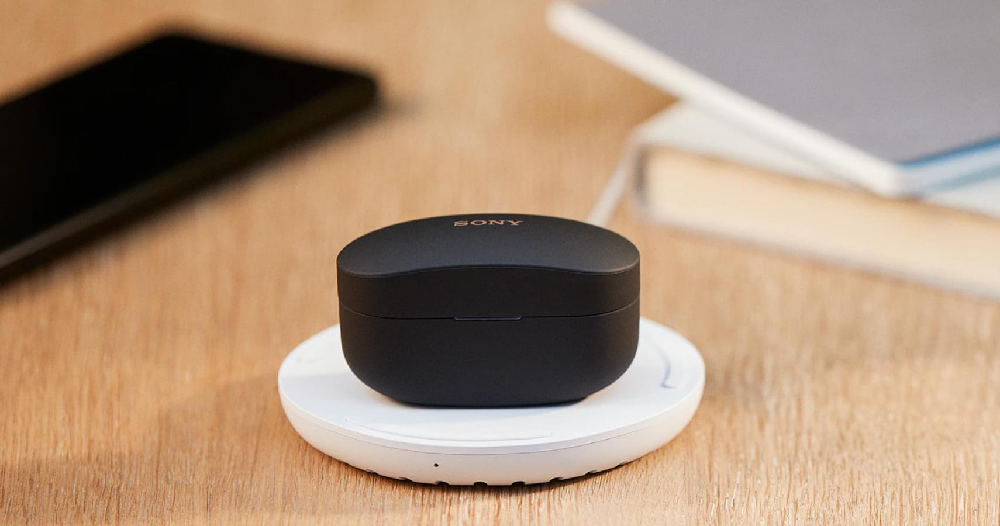

Полностью беспроводные наушники WF-1000XM4 оснащены передовой технологией шумоподавления1, которая обеспечивает превосходное качество звука и незабываемые впечатления от прослушивания. Эти наушники идеально размещаются в ушной раковине, поэтому подойдут каждому.
Никакого шума. Только ты и твоя музыка.
Полностью беспроводные наушники WF-1000XM4 оснащены передовой технологией шумоподавления1, которая обеспечивает превосходное качество звука и незабываемые впечатления от прослушивания. Эти наушники идеально размещаются в ушной раковине, поэтому подойдут каждому.
Минимизация шумов от ветра
Даже ветреная погода не помешают вам полностью погрузиться в мир музыки. Автоматический режим уменьшение уровня шума от ветра определяет его наличие и подавляет ненужные звуки.
Вы услышите все, что вам нужно
В наушниках WF-1000XM4 с режимом окружающего звука вы будете погружены в объемное естественное звучание музыки и сможете оставаться на связи с внешним миром.
Модель WF-1000XM4 поддерживает беспроводное аудио высокого разрешения.2 Специально разработанные 6-мм динамики воспроизводят динамический звук, несмотря на небольшой размер, а податливый диффузор обеспечивает богатые басы. Встроенный процессор V1 улучшает качество звука, уменьшает его искажение и обеспечивает обработку кодека LDAC и работу DSEE Extreme.
Наслаждайтесь аудио высокого разрешения без проводов
Благодаря технологии аудиокодирования LDAC модель WF-1000XM4 теперь поддерживает беспроводное аудио высокого разрешения2. Технология LDAC позволяет передавать в три раза больше данных (с максимальной скоростью передачи 990 Кбит/с) по сравнению с традиционными беспроводными решениями Bluetooth®. Благодаря этому вы можете наслаждаться аудио высокого разрешения в безупречном качестве.
Воспроизведение файлов со сжатыми данными
Система DSEE Extreme™, в которой используется функция Edge-AI, в режиме реального времени улучшает звучание музыкальных файлов со сжатыми данными3. Она распознает инструменты, музыкальные жанры и отдельные элементы каждой песни и в широком диапазоне восстанавливает звук, потерянный при сжатии. Благодаря этому в наушниках слышна насыщенная музыка.
Интеллектуальные функции для качественной передачи звука
Когда вы начинаете говорить, Speak-to-Chat останавливает музыку, чтобы вы могли вести беседу4. Это полезная функция, если вы хотите оставить наушники включенными или у вас заняты руки. Speak-to-Chat распознает ваш голос, и, как только вы завершите разговор, воспроизведение музыки возобновится5. Наушники также оснащены технологией Precise Voice Pickup, для которой используются четыре микрофона и датчики с современной функцией обработки аудиосигналов.
Наушники, которые узнают вас
Вы можете активировать функцию адаптивного управления звуком, которая будет определять часто посещаемые вами места, например офис, спортзал или любимое кафе, и настраивать под них звук.
Технология Precise Voice Pickup использует направленные микрофоны и датчик костной проводимости, чтобы наушники WF-1000XM4 могли четко и точно улавливать ваш голос во время звонков в режиме hands-free — дома, в кафе или где бы вы ни находились. Кроме того, технология шумоподавления позволяет более четко слышать собеседника на другом конце линии даже в шумной обстановке.
Созданы, чтобы уловить каждое слово
Направленные микрофоны настроены так, чтобы улавливать только ваш голос. А благодаря улучшенному соотношению сигнал/шум каждое ваше слово будет четко слышно, даже если вы находитесь в шумной обстановке.
Распознавание голосовых вибраций для улучшения чистоты звука
Датчик костной проводимости улавливает вибрацию только вашего голоса и не реагирует на окружающие звуки, что обеспечивает еще более четкую передачу речи во время звонков.
Управление с помощью голоса
Получите максимум от режима hands-free. Чтобы включить свой любимый помощник, просто скажите: «Окей, Google» или «Alexa».6 Развлекайтесь, общайтесь с друзьями, ищите информацию, слушайте музыку и сообщения, создавайте напоминания и т. д.
Наушники WF-1000XM4 поддерживают функцию Fast Pair от Google. Их можно легко подключить к устройствам Android по Bluetooth всего одним касанием. Быстро определяйте, где вы оставили свои наушники, позвонив на них или проверив их последнее известное местоположение на смартфоне. Вам даже будут приходить уведомления о необходимости зарядить их.
Простое подключение к компьютеру
С функцией Swift Pair можно быстро и легко подкючать наушники WF-1000XM4 к ноутбуку, настольному ПК или планшету с Windows 10. При выборе режима сопряжения на ближайших устройствах с Windows 10 появляются всплывающие подсказки по подключению.
Эргономичный дизайн для полного комфорта
С момента появления первых в мире наушников-вкладышей в 1982 году (MDR-E252) мы собрали огромное количество данных, касающихся формы ушей людей со всего мира. И наушники WF-1000XM4 являются результатом этого исследования. Их форма идеально подходит ушной раковине, а с новым эргономичным дизайном они фиксируются более прочно.
Найдите свой идеальный размер с помощью приложения
Подберите наушники с Sony | Headphones Connect. Приложение поможет измерить несколько параметров, чтобы найти идеальные по размеру амбушюры для шумоизоляции7, обеспечить максимальное качества звука и минимизировать посторонний шум.
Идеальное решение для телепередач, фильмов и не только
Смотрите видеоконтент на смартфоне или планшете? Улучшенное беспроводное соединение позволяет точно синхронизировать изображение на экране со звуком в наушниках WF-1000XM4, чтобы просмотр стал более приятным.
Более стабильный сигнал Bluetooth
Оптимизация алгоритма передачи с помощью интегрированного процессора V1 позволила сделать связь более стабильной и менее подверженной пропуску звуков, даже в тех местах, где есть помехи. Это позволяет передавать звук в оба уха с минимальной задержкой и более сильным сигналом, чем раньше.
Водостойкие наушники для ежедневного использования
Танцуйте, несмотря ни на что, ведь эти наушники с классом водостойкости IPX48 не боятся ни брызг, ни пота.
Длительное прослушивание, быстрая зарядка
Наслаждайтесь работой наушников в течение всего рабочего дня — 8 часов. Заряда чехла хватит еще на 16 часов. Это целых 24 часа9 проигрывания после того, как вы вышли из дома. Спешите? Всего 5 минут быстрой подзарядки подарят вам 60 минут проигрывания, а с помощью приложения Sony | Headphones Connect вы узнаете, когда уровень заряда чехла упадет ниже отметки 30%.

Простая беспроводная зарядка благодаря технологии Qi
Никаких шнуров — наушники WF-1000XM4 оснащены технологией Qi для беспроводной зарядки10. Чтобы зарядить наушники и чехол, можно воспользоваться смартфоном с технологией Qi, например, последним Xperia с функцией совместной батареи11.
Управление всеми функциями с помощью касания
Модель WF-1000XM4 имеет интуитивное сенсорное управление. Коснитесь левого наушника, чтобы переключиться с шумоподавления на окружающий звук, долго удерживайте палец для Быстрого внимания, дважды коснитесь справа для переключения дорожки. Кроме того, с приложением Headphones Connect можно назначить собственные функции каждому наушнику12.
Настройка звука под любую ситуацию
Благодаря возможности управления окружающим звуком в приложении Sony | Headphones Connect вы можете регулировать громкость фоновых звуков и указывать в настройках, что хотите слышать только голоса людей. А эквалайзер позволяет настроить уровни звука под вашу музыку.
Наушники WF-1000XM4 представлены в черном и серебристом цвете.
Маленький размер, но бескомпромиссное качество
Мы изменили распределение внутренних компонентов, чтобы наушники WF-1000XM4 на 10% меньше, чем предыдущее поколение, что не повлияло на качество звука или время работы от аккумулятора. Они весят всего 7,3 г, поэтому вы сможете носить их весь день. Чехол для зарядки тоже меньше на 40%, но при этом обеспечивает 16 часов заряда на ходу.
Забота об экологии
Упаковка наушников WF-1000XM4 не содержит пластика. Она разработана на основе принципов применения материалов с низкой токсичностью и философии «Сделано для повторного использования», что показывает нашу социальную ответственность. Бумажная упаковка, за исключением этикеток, на 99% сделана из переработанных и экологически чистых материалов, разработанных специально для Sony.
Что в упаковке?
В упаковке наушников WF-1000XM4 находятся 3 пары вкладышей для шумоизоляции разных размеров, а также зарядный кабель USB-C.
Эффект присутствия. Реалистичное звучание.
Погрузитесь в звук. Ощущения, как будто вы находитесь с исполнителем на живом концерте или в студии. С функцией 360 Reality Audio, музыка никогда еще не была такой живой и реалистичной. С этими наушниками можно насладиться функцией 360 Reality Audio13.
*1 - По состоянию на 26 апреля 2021 г. Согласно результатам исследования, проведенного компанией Sony Corporation в соответствии со стандартом JEITA, для рынка полностью беспроводных наушников с шумоподавлением.
*3 - Функцию DSEE Extreme™ можно включить в приложении Sony | Headphones Connect.
*4 - В редких случаях Speak-to-Chat может случайно запускаться в ответ на вибрацию устройств, например от электрических зубных щеток, электрических массажеров и электробритв, а также во время чистки зубов, кашля или других жужжащих звуков.
*5 - Коснувшись сенсорной панели на левом или правом наушнике, вы отключите функцию Speak-to-Chat и сможете незамедлительно вернуться к прослушиванию музыки. При стандартных настройках режима Speak-to-Chat воспроизведение музыки возобновляется через 15 секунд после того, как вы закончите беседу. Это время можно изменить с помощью приложения Sony | Headphones Connect.
*6 - Активировать функцию Google Assistant, произнеся «Hey Google», можно лишь на устройствах Android. Google, Google Assistant и Android — это товарные знаки компании Google LLC. Amazon, Alexa и все связанные логотипы являются товарными знаками компании Amazon.com, Inc. или ее аффилированных компаний. Приложения Google Assistant и Alexa доступны не на всех языках и не во всех странах или регионах. Загрузите приложение Google Assistant или Amazon Alexa и настройте их использование в Sony | Headphones Connect.
*7 - Для проведения измерений к наушникам WF-1000XM4 необходимо прикрепить вкладыши для шумоизоляции.
*8 - Все элементы наушников, кроме звуковой трубки (звукового выходного канала), вентиляционных отверстий и отверстий микрофона в двух наушниках, защищены от струй воды, распыляемых под любым углом. Зарядный чехол не защищен от воды.
*9 - 8 часов (наушники-вкладыши) + 16 часов (чехол для зарядки). Всего 24 часа при подключении по Bluetooth® с включенным шумоподавлением. 12 часов (наушники-вкладыши) + 24 часа (чехол для зарядки). Всего 36 часов при подключении по Bluetooth® с отключенным шумоподавлением.
*10 - Зарядная панель продается отдельно. Чехол для зарядки совместим с беспроводными зарядными панелями, которые соответствуют стандарту Qi. Чтобы чехол заряжался должным образом, используйте подходящую беспроводную зарядную панель.
*11 - Модель Xperia 1 III (доступна не во всех регионах). Функцией совместного использования батареи нельзя пользоваться во время зарядки Xperia 1 III.
*12 - Приложение Sony | Headphones Connect позволяет назначить для каждого наушника другие функции, такие как Google Assistant, Amazon Alexa и управление громкостью музыки. Если функции шумоподавления и окружающего звука не нужны, отключите их в приложении Sony | Headphones Connect.
*13 - Необходимо установить приложение Sony | Headphones Connect. Требуется подписка на музыкальный сервис, за которую может взиматься плата. Отдельные сервисы могут быть недоступны в некоторых странах и регионах.